Numbers's super cool guides
Ghouls & ghosts (Arcade/genesis megadrive) Any%
Last edited: 2025-03-19
This guide has a complement video playlist of all levels in fullscreen, 60fps with no cuts.
The speedrun of the ARCADE VERSION is slightly different from MEGADRIVE VERSION. Most of the strats on this guide applies to arcade, but some sections are different. I specified which sections vary in the guide, and AQUAS covered the arcade in a video guide.
This speedrun is heavily based on RNG. There is an INTERNAL RANK, which means the game gets harder the longer you survive, and it goes back to the base rank once you die.
In general, all enemies become faster and numerous as your rank increases, same for projectiles, and patterns could change. We will manipulate the rank during the speedrun to make certain sections a bit easier, that means taking intentional deaths.
It's hard to learn this game by memory since it's strongly RNG based. The best way to learn is experiencing the game in every rank, so keep playing it if you die, reset the least you can. Don't get stuck practising one stage until you perfected it. Instead, practice learning patterns of a stage, setups and the rest of the stage will come to you eventually. You need to see every possible RNG to master this speedrun, to be ready for it. You must learn how to recover armor and weapons so I recommend starting with:
Chest chart & chest locations, checkpoints, weapons, arremers moveset and patterns.
I divided each stage in two sections: FAST or SAFE. The fast is the proper strategy for the stage and the safe is an alternative version which is easier for beginners. I recommend learning them both, starting from the safe, because it's a nice way to recover if something went wrong. Once you feel comfortable enough you can start introducing faster strategies here and there in the level, it doesn't have to be perfect, it just has to suit your skills.
Jumping is faster than walking. The extra speed is significant enough to skip certain spawns and is required for some strategies, since the speedrun is based on Arthur's current location. Getting hit, stopping somewhere, walking or slowing down will mess up things. It will affect enemy patterns, spawns.. But if you jump, you won't be able to change direction so walking instead can save you from tricky situations.
You can buffer a jump by holding the jump button in the ''ready go'' screen.
Pressing the shoot button spawns your projectiles immediately, but there is a significant number of frames Arthur spends locked in the attack animation afterwards. These attack animations can be cancelled by tapping left/right/down or jumping. Take advantage of jumps to keep moving while shooting.
There is JANK HITBOXES only in the MEGADRIVE VERSION. These affect projectiles such as fireballs and beelzebub projectiles.
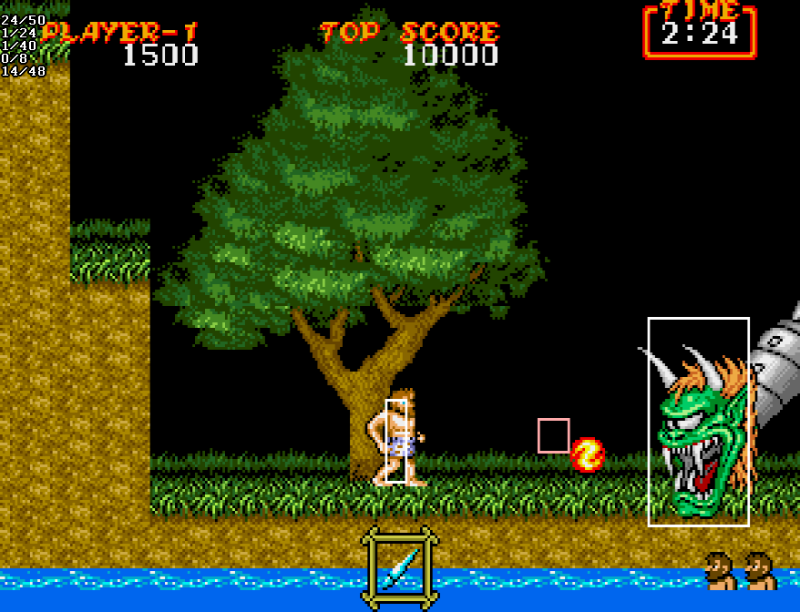
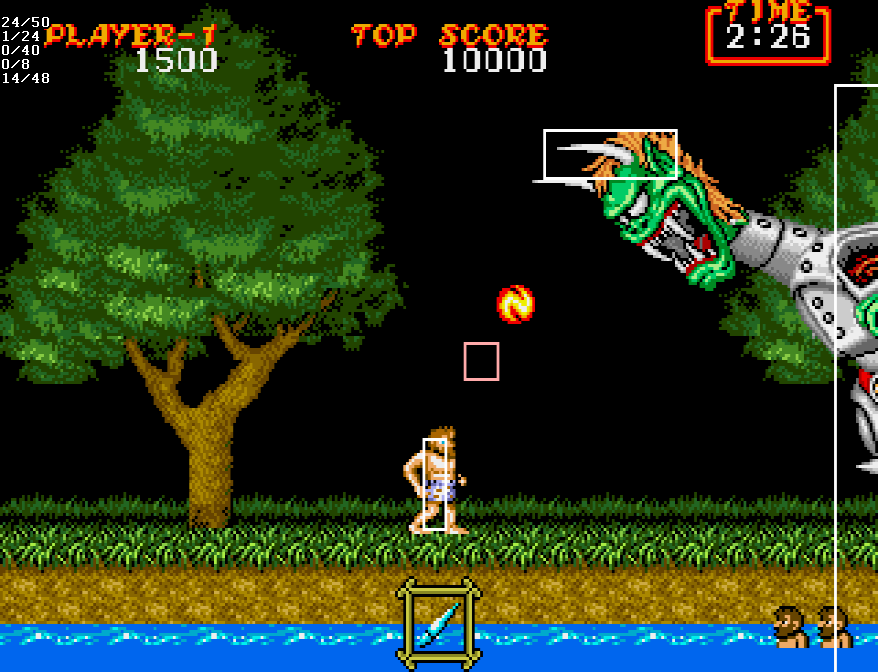

You have infinite continues. In the game over screen you should press start, pressing the shoot button will drop the timer down to 0 real quick.
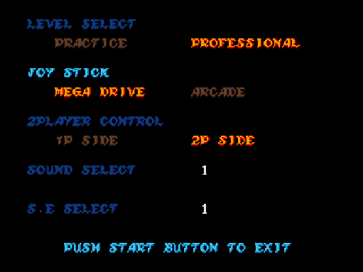
The ROM is the JPN - Dai Makaimura. The difficulty should be set to professional at the options menu. Joystick megadrive is recommended, If arcade joystick is selected, Arthur will get locked in place if pressing diagonals.
Timer starts when the player presses start at the title screen. Timer ends when you land the killing blow on Lucifer. The US version has checkpoints at the bosses, and the Prin Prin text is slower. It is permitted.
The chests are hidden in specific spots on every stage. To reveal them, you have to cross the corresponding invisible trigger and they will appear always on the same spot. Chests can contain weapons, armor and an evil magician that attacks you.
What those chest contains depends on the current armor Arthur is wearing. This is the chart that shows what each chest will contain, and it cycles.
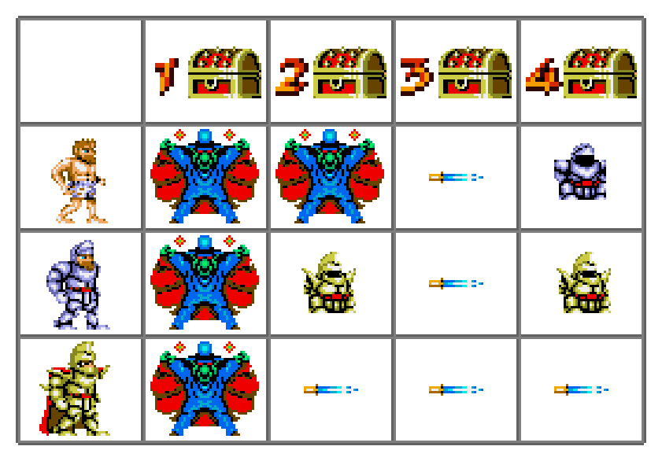
The numbers mean the order you reveal them, so it is important to memorize this chart so you can count how many chest you revealed and which armor situation you are in to know what is on the next chest. It's important to reveal as many chests on our path as we can in case you lose the armor, you can recover it in the future on chest 4. I will guide you on how to reveal chest in each stage.
The content will always be decided on the current armor at the moment you open the chest , not the moment you reveal the chest.
All chest that contain a weapon in loop 2 will turn into a psycho cannon as long as you open the chest with gold armor.
Every time you respawn (either start a stage, beging at the checkpoint or cross a checkpoint) the next chest will always be chest 1.
There are 7 weapons in this game, the lance, the dagger, the axe, the holy water, the discuss, the sword and finally the last weapon psycho cannon. Weapons can be found on chests or dropped by enemies that carry a pot. The weapons you find are completely random, but holding certain weapons give more probability of finding other specific ones.
Every weapon of the game is unique and have different specs and magic. You can only cast magic with gold armor. After casting magic, you have a certain amount of i-frames that will vary depending on the weapon. (This is important, since we will be using the i-frames to dodge enemies/projectiles)
Projectiles deal the same damage independently from the armor, except the psycho cannon, which deals more damage at point blank and increases the range depending on the current armor.
We are going to focus mainly on three weapons, the DAGGER, which is the main weapon we want, and alternative the LANCE as a backup, and finally the PSYCHO CANNON. Holding the discuss and the axe gives more probablities to spawn the dagger, it's a risky play but have it in mind.
DAGGER
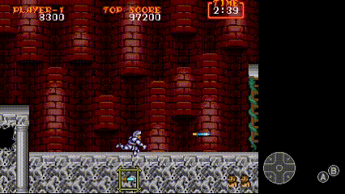
This is our main weapon. We will farm it in level 3. Three projectiles can be on screen at the same time, so if you mash the button, Arthur will get stuck in the shooting animation but won’t have daggers left (1). To prevent that, you can spread the daggers a little bit by pressing the shoot button slower (2) YOU SHOULD ALWAYS SPREAD THE DAGGERS JUST LIKE IN THE SECOND VIDEO
Mashing in front of walls or enemies increases the DPS (1). You can also throw low daggers if you press shoot and then jump (2) THIS IS VERY IMPORTANT because it allows us to kill enemies that are not in range of a high shot.
DAGGER MAGIC Arthur creates an invincible clone for a short amount of time that mimics Arthur's movement with a little bit of delay. After casting the clone you have some i-frames. The clone can get stuck shooting towards the opposite direction. To fix that, just stop shooting, let the clone turn around and shoot again.
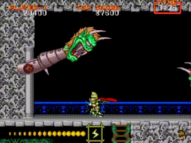
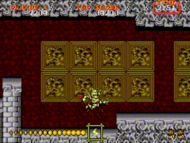
LANCE
This weapon is the second best. Its dps is not that high as the dagger. This should be the speed you shoot at to spread the lances in a more uniform way.
MAGIC. Arthur casts a powerful lightning that deals damage from above and to the sides. You have less i-frames after casting than the dagger magic. It has the ability to kill bosses and strong enemies in one hit if you release the magic when you are very very close to the enemies, so hold the magic and wait until they move closer to you.
The AXE, SWORD and HOLYWATER magic share this property, where they will do a one hit KO if the enemies get closer. HOLDING AXE OR DISCUSS INCREASES THE CHANCE TO GET A DAGGER
Axe projectiles pierce through enemies, the discuss trails the ground annd collides with walls/enemies, its magic can kill an arremer if you place the mirror on the arremer. The sword is the only weapon that deals 2 damage.
PSYCHO CANNON
You must be holding this weapon before fighting beelzebub on loop 2 to enter to the final boss room. If you defeat Beelzebub without Psycho cannon in loop 2 , you will get sent to the beginning of the level.
All chest that contain a weapon in loop 2 will turn into a psycho cannon as long as you open the chest while wearing gold armor.
The psycho cannon deals more damage at point blank, and it can destroy projectiles. It has longer range if you are wearing gold armor.
VIDEO
I recorded a video with some basic knowledge of how to manipulate arremers to kil them without a quick kill. This is super important and you must learn it to be able to kill arremers no matter what. Check the video out here: ARREMER VIDEO YOUTUBE
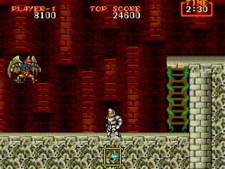
EASIEST WAY: If you wait long enough, the arremer will drop down to the floor. After a short amount of time it will most likely charge towards you, so be ready and press the attack button as fast as you can.
If the arremer accidentaly gets underground, shoot in that tempo, spreading the daggers and the arremer will come up eventually and get hit.
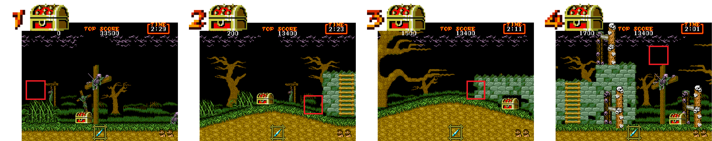
Every time you start a stage, the map will show up. To skip it, either press the shoot button or start.You can always buffer a jump holding the jump button until the ‘’ready go’’ text is gone. In this section, we are only going to spawn chest 4 to jump over it. On loop 2 you could spawn the chest to recover the dagger if needed only if you are wearing steel armor.
The reapers don't hit you until they rise completely Reaper spawns are RNG in every stage they appear in, rank makes them faster and you get more spawns. Important: After the first jump (0:04), walk for a few frames and keep jumping, this prevents getting hit by the first reaper that spawns.
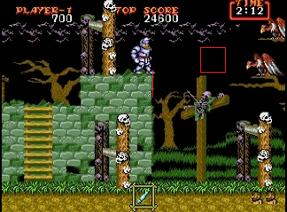
When you get to this poin wait on the edge for that long to time the guillotine. You will hit an invisible trigger and you will land on the chest to jump over the guillotine.

There could be a reaper carrying a pot. Usually it contains a weapon. When this happens, get close enough before shooting, you will clip past the
weapon. This applies for the rest of the game. You can also jump over it, but in the future other weapon drops will appear in points that are almost unavoidable. CHECKPOINT:
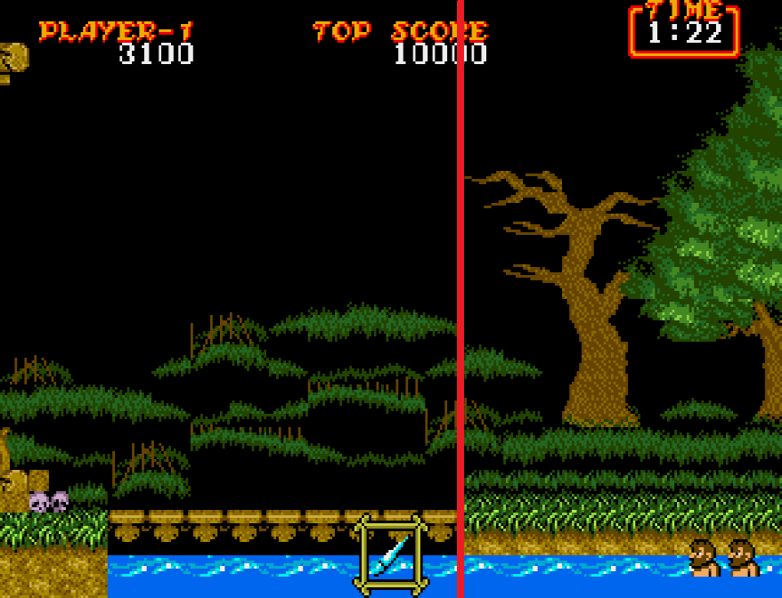
You get the checkpoint after crossing the line. If you are not wearing armor after crossing the checkpoint, take an intentional death. We need the armor for the damage boost on the plant to skip some platforms.
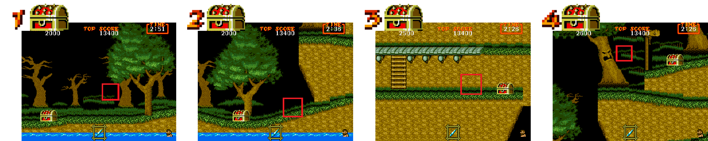
Recovering armor is no use in this section. If you lose armor is more worth to take a death or finishing the stage without it (I recorded it at the end of this section on how to do it). Recovering weapon here loses a lot of time too so don't go for it.
PATTERN - The squirrels section is a pattern. There is two patterns you can get, and they are RNG.
You must keep jumping to be the fastest in this section, because the plant boost setup will only work if you are fast. If you are slow, other plants and tentacles will appear and will mess up our timing. If you die too much, earlier tentacles will appear, so if that happens, just know that it's because the rank is too low.
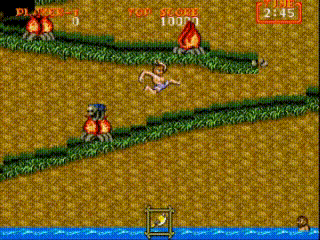
You need to be fast in this section for it to work. When you are under the second plant (0:03), walk for a few frames to land on the platform without hitting the flower.
If you get a tentacle there is because the rank is too low, you died too many times.
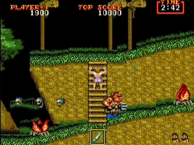
Once you climb, you need to walk for a few frames between the first and the second jump (0:01), otherwise the pig will run over you.
Alternative: After the first jump, you can walk under the pig.
If you lose armor before the boost you can take a death but it costs some time. Optionally you can try to finish the stage, at your own risk to lose even more time if you end up dying since this section is very difficult. Once you are on the second platform (0:04) get away slightly from the ladder so you can duck, shoot the flower being careful with the projectiles. Next step is to kill the pig above you. Before climbing the second ladder (0:08) Jump to reveal the upper flower and kill it from below. Climb the next ladder and jump and shoot to reveal the other flower and kill the pig at the same time (0:12)
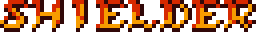
This boss is one of the hardest and a little bit special. The hitbox of the fireball is misplaced from the sprite and it's different depending on if it's a diagonal or a straight shot -THIS ONLY APPLIES TO MEGADRIVE-ONLY ON ARCADE you can duck under horizontal fireballs.
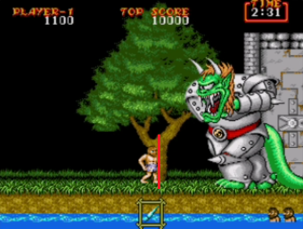
To do the setup you have to align Arthur in the middle of the tree (it doesn't need to be super precise). Then shielder will always move his head up first and then move it down. He will make a short pause there.
Then there are 4 different patterns. An easy way to distinguish them is the way he moves his head. If shielder only moves his head up and stays there, it would be pattern P1 or P3, but if he moves his head up and slightly down then it's going to be P2 or P4. (Check the shielder video for an easier comparison on youtube here: SHIELDER PATTERNS
You have no way to know which pattern shielder will use. Even though we have 4 patterns, it's not guaranteed that shielder will react exactly that way, since his movement speed, his moves and the fireballs/fireball speeds are based on rank and RNG. P1 is the most common pattern. P3 and P4 are the most aggresive patterns, it will tend to happen more often on loop 2 and are the ones that tend to be more random.
NEVER go back to the left corner of the field unless shielder is pushing aggresively there.
We are not going to memorise the chest on this first section.
TURTLES PATTERN: The turtles section is sort of a pattern. There are two patterns and a fiesta one, the fiesta pattern can get crazy so it's not consistent enough. The pattern you get is RNG so there is no way to know which one you will get but you can identify it on the very first turtle.
IMPORTANT: If you get hit or slow down in this section it will completely mess up the patterns, it's a very difficult section.
First off for the setup, we will always JUMP THREE TIMES at the beginning of the stage.
To identify the pattern you have to look at the first turtle that comes after the three jumps. If the turtle comes from high, then it's P1. If the turtle comes low it's P2, and if the turtle comes much later than usual from very high is P3 (fiesta pattern).
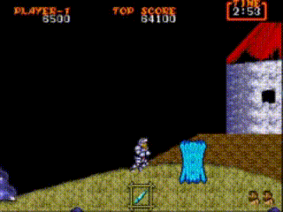
If you wiggle back and forth quickly while standing on the blue platform, the turtles might despawn.
If you struggle recognising the patterns, on P1 you can count 3 turtles before the blue pillar. On P2 you can count 4 before the blue pillar.
The bridge holes are always in the same spot, while the flies that can appear depend on RNG. We can do two things, either play fast and take advantage of the sand to push yourself forward to gain momentum (Left) it only saves one second, and you could lose a considerable amount of time trying to get back on the bridge. The other options is just jumping casually on the bridge (right).
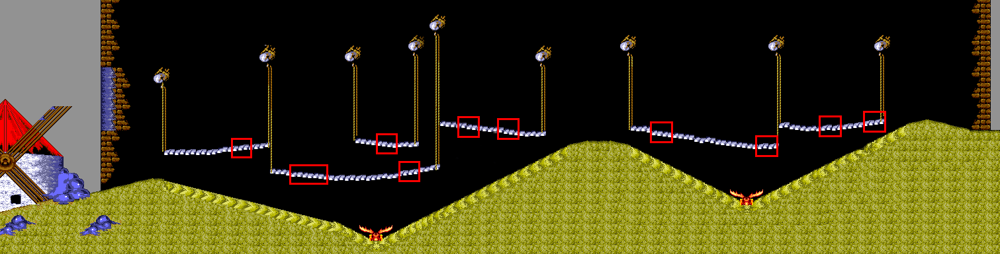
You should imitate how I jump and shoot daggers since it's consistently good to kill the flies in the way despite the RNG. I shoot both low and high daggers to make sure I kill every possible fly (that means shooting before jumping, and shooting after jumping)
Right before the checkpoint, we will have to deal with an ARREMER. This arremer is the king and takes 4 hits to kill. First, he will throw a skull so you have to walk for a few frames when you get to the skull mountain (0:01).
The safest way to deal with him is to cross the checkpoint and take a death going down the hole to despawn it. The fast way is trying to kill it while we keep going on with the stage. To kill it, you need to use the quick kill strategy, this is hard because you will have to deal with the arremer at the same time of running through the rest of the stage, it's not guaranteed that the arremer will die fast so despawning the arremer is not that time consuming, and you keep your armor for the section.
CHECKPOINT: You get the checkpoint after crossing the red line. We will be making an optional but optimal damage boost on the next section. Armor is required for it, so if you don't have armor after the checkpoint and you want to go for the damage boost take an intentional death right there.
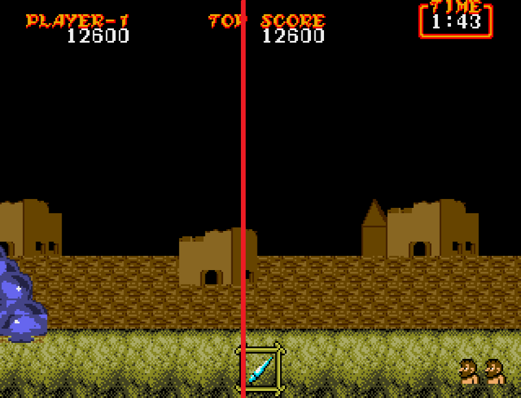
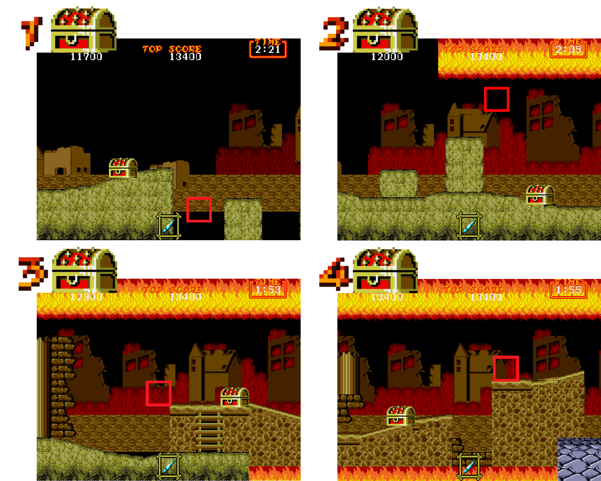
In this section we don't need to reveal chests. In loop 2, you can reveal chest 1 2 3 if we don't have the dagger and you have steel armor. Chest 4 is not worth in my opinion since for picking up the armor you have to jump back to the other platform, and the boss is very easy.
In this section the bats are RNG. Be careful if a bat is carrying a pot, get ready for possibly jumping over a weapon. Between the falling pillars I usually duck and shoot a lance to kill bats that could appear on that height (0:03)
Imitate the way I shoot and at the end make a jump out of the edge of the tallest pillar to hit the chest trigger (0:06)
On the next section, we can do a setup for a damage boost to make it past the fire pillars while on i-frames. You will be fast enough to run to the end of the section leaving the next fire pillars behind. You can also play safe so you keep the armor for the rest of the stage skipping the damage boost.
Bats will continue appearing. The pillars are RNG. The plants are always on the same spot but on high rank they shoot much faster, something you should keep in mind for the damage boost on loop 2, you have less time to do the setup so it has more chances to fail. Also so you are ready for possible projectiles here and there.
You must be pretty fast for this setup. After jumping out of the platform, you must keep jumping without stop, jumping over the plant and grabbing the ladder and waiting for the plant to shoot. You will make it onto the platform. From there on (0:05) you need to keep jumping as fast as you can, and kill the plant before you jump to the next platform (0:07) and shooting another two high daggers to pre kill the other plant left. There are other ways to do this boost but this way is the most consistent one.
To play safe and keep the armor you should kill the plant as soon as you see it, far away from it just in case it shoots at you. Right after jumping over the spot where the plant was (0:02) I usually shoot a dagger up and forward to kill possible bats. We need to wait for the pillars until the path is clear. You can destroy pillars if you shoot on the fire ball. I recommend when you are on the platform (0:07) kill the plant before jumping to the next platform, and shoot the next plant.
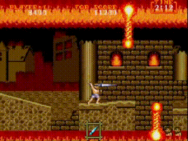
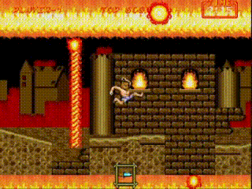
TIPS : (1) If you stand on the middle platform for a long time the plant will shoot so be careful and don't jump into it. Remember projectiles are faster if the rank is higher. (2) Sometimes there can be a bat that takes the hit for the plant so pay extra attention.
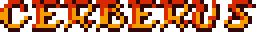
Cerberus is a PATTERN, It never changes. There is two options depending if you want to play easier (safe) or faster. The fast way is not too difficult so you can go for it right away.
Align Arthur in the middle of the pillar. Then mimic the video. On 0:05 when cerberus goes over you, don't stand up too quick or you could get hit.
Align Arthur on the middle of the black line of the castle in the background. It doesn't need to be super precise. Then just mimic the video.
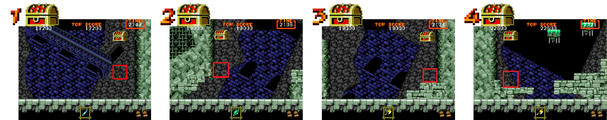
In this stage we will farm the dagger and make a clip skipping a lot of the elevator right before the checkpoint, but this ONLY WORKS ON MEGADRIVE, there is no clip on arcade. You CAN'T MAKE THE CLIP if you open more than one chest.
If you are holding an axe or a discuss, you will have more probability of getting a dagger drop. Axe is very good in this section since it pierces through enemies, but use at your own risk, if you were not able to find the dagger, you would have to stick with the axe for a while. There is a lot of enemies that carry a pot so we have a lot of chances to find a dagger. If you don't find the dagger is okay, you can keep playing the rest of the stages with lance and hope we can switch to the dagger in the next stages.
We are going to make a setup spawning the chest in a certain way. The goblin spawns are RNG and based on rank. Try to jump the least unless is necessary in this stage, so you can move left and right to dodge. Reveal the first chest.
The pink knights are easier to kill from below since they block projectiles with the sword. Reveal chest 2 and quickly jump to the other side to reveal chest 3 and open it.
If the weapon was not a dagger, we have another setup for trying to get the dagger on the next chest. If you do this, you WON'T BE ABLE TO CLIP (you can only clip on megadrive). After opening chest 3, you hurry and jump back while shooting chest 2 to pick up gold armor. Then chest 4 will be a weapon.
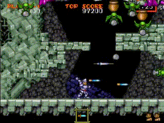
If there is an unwanted weapon on the way you can avoid it by standing on that spot. There is no real wall in that specific spot.
You need to hurry so you don't get crushed. The yellow enemies have a small hitbox so you can almost get inside the sprite while shooting and get away with it. To open the wall (0:05) you can shoot from below but this only works with dagger.
ELEVATOR SKIP CLIP (ONLY MEGADRIVE)
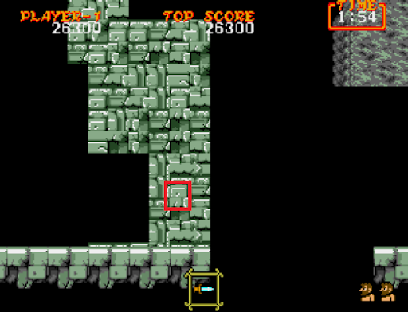
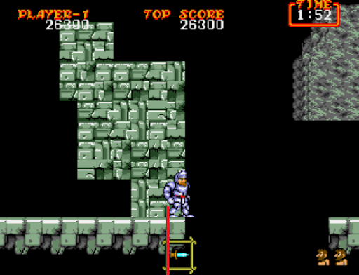
(Open image in new tab for zooming in).
For the setup, you need to hurry to the end of the platform. You can use the block that has a black dot as a visual cue. Align Arthur past that block.
Once the platform goes over the black dot, do a single jump to the right.
CHECKPOINT: You only get the checkpoint when the platform rises entirely.
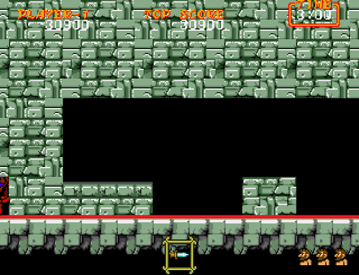
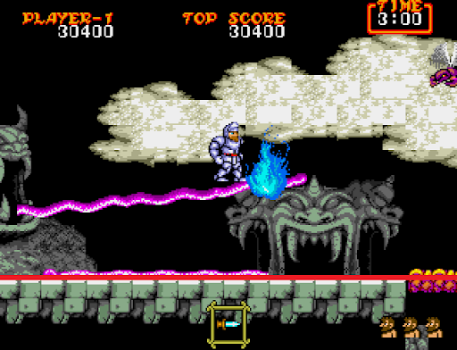
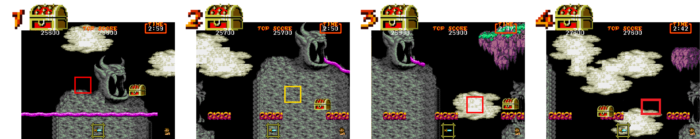
If you want to lower the rank of the next level (level 4) You can take a death when you get the checkpoint (Remember that you only get the checkpoint when the platform rises entirely)
We will duck under the trigger for chest 2 so the chest doesn't get in the way of our daggers. Don't try to recover weapon or armor in this section. Flies spawns are RNG
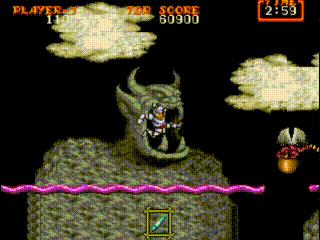
Jump over the mouth to prevent ducking. Stand on the left side until the tongue crosses the flame. If you get close to the second statue to the
point where you see the platforms before the tongue makes it past the flame, the platforms will start spawning and mess up the next setup. Flies might carry a weapon and it will be in your way. You can neutral jump until the tongue appears to avoid it.
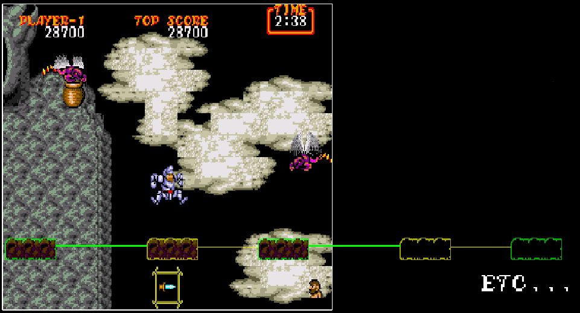
Platforms appear in a set distance pattern. There is a fast and a safe way to play this section. We are going to make a setup. This setup highly depends on the platforms position so sometimes it might not work because the start of the platforms pattern is random so you will have to work around it and do a mix of fast strategy and safe strategy.
On ARCADE VERSION this setup is slightly different. I recommend you keep reading so you see the mouth hitboxes and important information that stays the same, and after that, aquas's arcade video tutorial HERE.
Try to duck under the hitbox of chest 2 so it's not in the way of your daggers so you can kill incoming flies. Stand up after you crossed the trigger so you spawn chest 3.
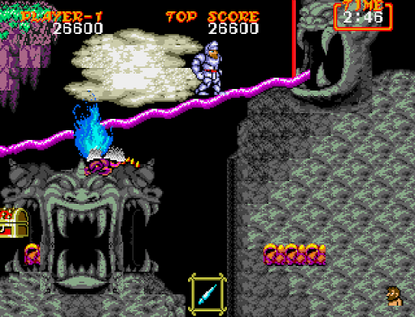
Once you land on the tongue (0:02) wait for a few frames after jumping over the flame. This moment allows you to see if the platforms below are in the correct position so you can jump past the mouth and land on them.
The platform hitbox is a bit jank so even if it looks like you are going to fall out of it, you can still make it on the platform.
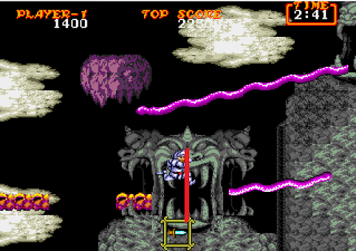
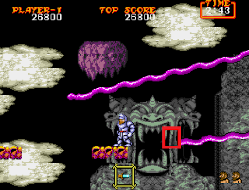
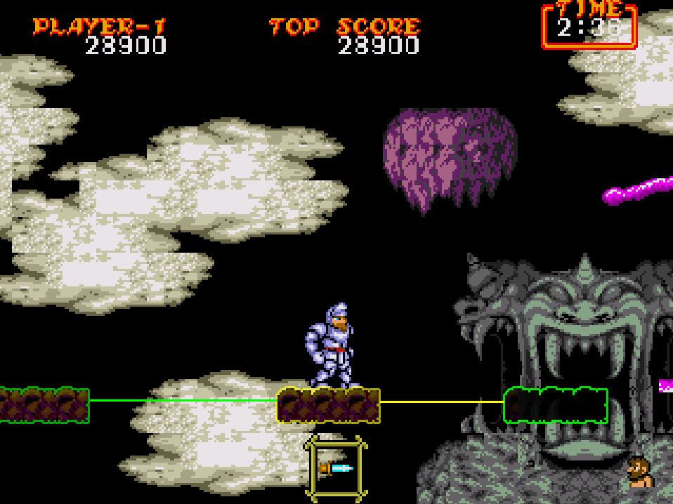
Walk on every platform for a few frames to start positioning Arthur correctly for this setup.
The dangerous hitbox is on the right side of the mouth. You can jump over it if you walk until you align Arthur with the middle of the statue's mouth (red line). Make a jump to the right over the dangerous box. Be careful with flies.
The platform hitbox will still be there even though the sprite has not appeared yet so pay attention to the platforms pattern.
If you get hit at any point on this section, the pattern timing will get messed up for the setups so at that point be ready because you might need to play the section in a safe way.
The SAFE STRAT works on ARCADE VERSION. I recommend learning both strategies, because doing the fast setup requires some experience recognising the platforms pattern quick.
Duck because the upper platform is dangerous. Jump over the flame and then walk down the tongue to fall down the first platform you see.
For the last section, you have to wait until the last tongue reaches to where you are standing, keep shooting so you don't get hit by a fly. Walk out of the
tongue and finish the section. If there is an enemy under you, or you see that you won't be able to walk out of the tongue because the platforms are not aligned correctly, you can always do a neutral jump to gain some more time and guarantee that you fall on the platform or guarantee that you kill the enemy before landing on the platform.
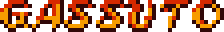
Gassuto is a pattern. It rarely changes. The changes are not usually drastic, and I believe that if you died during the section, or you didn't make the elevator skip, Gassuto will spawn a little bit lower than usual. The dagger kill applies for discuss, but the lance kill is slightly different since it has less dps.
Start throwing projectiles the way I do in the video once you touch the first slope. Then stand on the middle (0:03) of that little slope and fight gassuto over there. If you have the dagger, spam the button right there towards him. If you have the lance, you need to spread the lances a bit more so mimic the video. If you don't succeed with the quick kill, try to keep standing on the same spot.
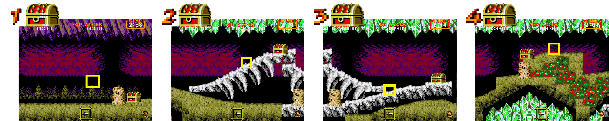
If you wanted to lower the rank in this level, you must have taken a death on stage 3 after the checkpoint.
Always reveal all chest in this section so you can recover armor (you will need it). Chest 2 is in the way. If you start the stage with steel armor you can open chest 2. If you start the stage with gold armor chest 2 will be a weapon so we want to clip past it.
If you struggle clipping past the chest you could not spawn it but then you don't have a way to recover armor if you get hit.
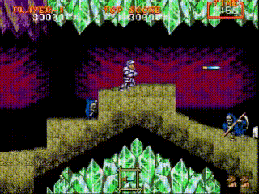
Sometimes the reapers down there will hit you before they climb. To prevent this, wait in the middle of the platform until it climbs to shoot it.
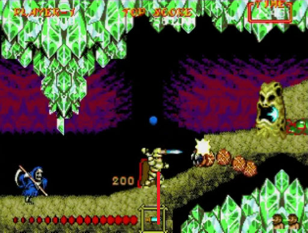
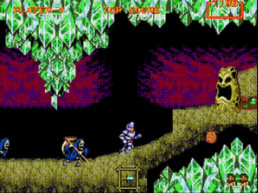
The mudman has a jank hitbox so sometimes takes a while to kill it. Align Arthur with the ground that is a bit darker, and jump and shoot from there, don't move. Be careful with the worm in front of you and reapers from behind.
If you cross the red line, the next worm that's on top of the platform will spawn and it will block the path and most likely you won't make it past the worms leaving them behind.
If you get hit, you can recover armor there. Kill the worm first, open it and wait until it's safe. Sometimes there can be a reaper that comes out of the ground (0:06). You can kill it while dropping down. If you are not too sure, just wait on the platform, not on the edge, until it climbs and kill it.
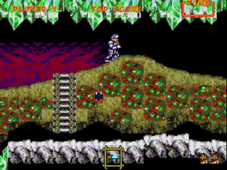
If you play fast you can walk past all the worms but if rank is too high, or the worm by the chest spawned you might not have time to cross. Sometimes the worms despawn for the whole section.
If you see that the worm is spawning and that you don't have enough time to cross, get as close to the head as possible and kill it from there, don't duck by the ladder.
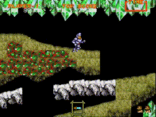
If you kill the mudman fast enough you could jump over the worm. Sometimes that mudman can despawn randomly so pay attention.
If the worms start spawning try to focus on killing them first. If the worm behind you spawns, turn around and kill it too.
CHECKPOINT
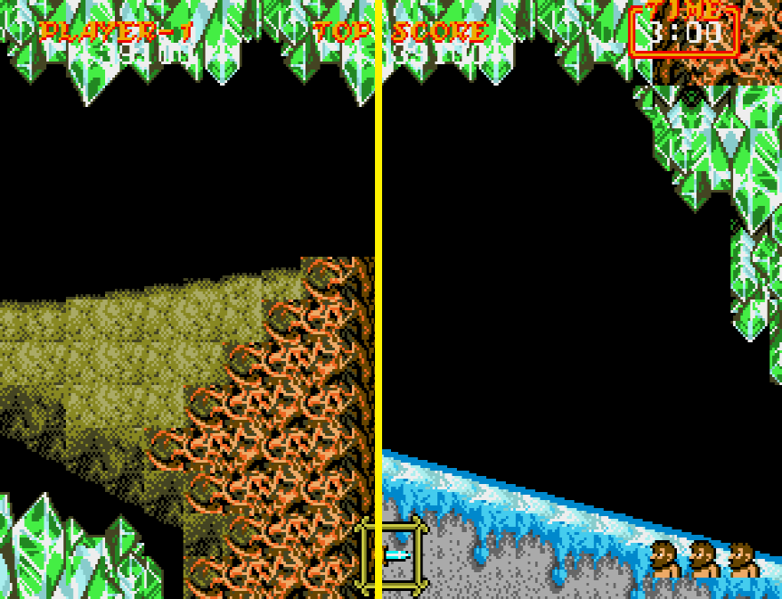
We are going to damage boost on the next section. If you don't have armor by the time you get to the checkpoint you need to take an intentional death jumping to the spikes there. If you want to have armor at the boss, buffer a jump (0:08) to the left when you respawn to reveal chest 1 and keep walking non stop to make it past it.
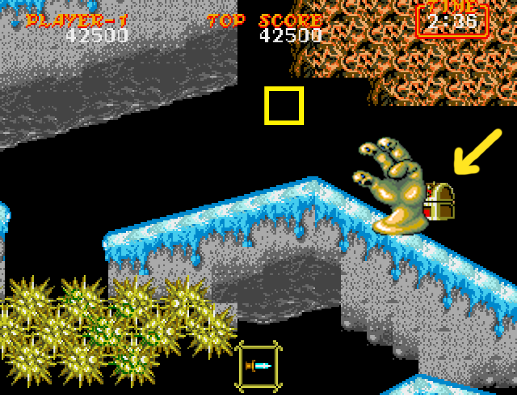
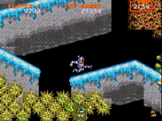
Chest 4 didn't have armor even though I did everything correctly, why?
There is a chest trigger close to the hand so if you accidentally jumped while trying to dodge enemies or projectiles, you will spawn a chest that is hidden behind the hand and it's easy to miss since you can't almost see it.
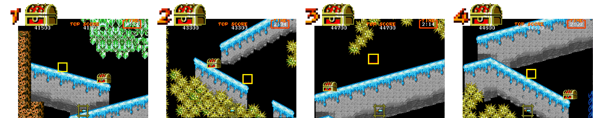
We are going to do a damage boost to skip most of the stage. There is the fast way and the safe way, where you recover armor right before ohme.
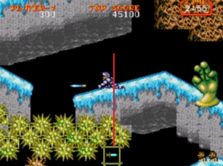
For the setup, align Arthur with the blue dot on the ground. Shoot to lock Arthur in place and wait for the hand to shoot a projectile. The projectile is random so sometimes takes more time. Once you start falling (0:05), press left and you will land on the bottom of the platform.
Sometimes the worm can hit you and boost back and you won't have time to fall all the way down. That's why I recommend shooting to the left instead of up.
BIG JUMP
This strategy is very risky because it's hard to perform since it's very tight so I recommend playing this section the safe way, only include this strat if you want to go for sub 16.
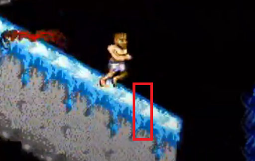
You can jump over the hand (but in high rank the hand can shoot earlier) Jump once you are at that specific spot marked in red and shoot down exactly like in the video. (Check the Youtube video linked at the beginning of the guide for better quality)
For recovering armor you need to have spawned chest 1. After the damage boost, turn right instead of left and fall down while shooting to kill the bottom hand. That chest behind the hand (0:05) is a weapon in case you need to switch, but I recommend opening it from the left side so you don't run into it if it's not a desired weapon. There can be two blue worms (0:06) that is the worm that spawns on the left side, and:
there can be a worm on the right side. If you always imitate this video, you will always kill both worms no matter which one is spawning. Only 1 can spawn at a time. Open the chest and pick the armor.
If you are not too sure you can shoot over there until you see a worm and kill it. To reposition there avoiding climbing on the platform you have to let Arthur slide to the left and shoot to lock his position once you are at a good spot.
Always open the chest from the left side. If you fall down, you won't be able to get the armor.
Follow the path of the video. If you took too long on that section, worms can start shooting green balls (gif), Once you see them, wait it out to keep going.
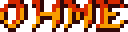
The beginning of ohme setup is always the same. Discuss and axe are terribly bad for this fight since it collides with the orange worms. You can fight ohme with holy water but it's very hard. The orange worms and the green worms are RNG. The green worms can overlap sometimes so there would be one behind another worm. I recommend walking as much as you can so you can move back and forth dodging the worms.
Jump that way until you are above the third core. Jump and shoot two daggers separate from each other, and then mash the shoot button. Move to the next core on the left and wait until the core is out to shoot the same way. Repeat this on the left core. If you are playing with the LANCE (right video) you must shoot exactly like in the video at that speed or the core will get back in and won't come back for a while.
For the second part (fast) you can move quickly to the right and kill the two left right away. For safe, you can stand all the way to the right edge of ohme, you can step out of it a lot, the hitbox is so big that Arthur looks like he's flying. Duck there and shoot in slow pace to kill the rest of the cores and incoming worms.
If you are playing with the holy water, you can start hitting the middle core over there, shooting slowly. Then move to the next core and switch between cores if you see that you can't shoot the other one. Move to the other side (0:13) and do the same starting from the right shooting the last core. Be careful! the holy water also collides with the orange worm!
ARREMER QUICK KILLS
Even though these strategies are consistent enough, sometimes it can go wrong. That’s why it is important to read the arremers to understand it’s moveset and have alternatives to kill them. First thing, don’t use the clone magic on arremers, please.
Quick kills work with dagger, with lance and with discuss.
To distinguish which quick kill you should use, I like to divide it into heights. After waking up the arremer, you need to look at which height the arremer is at. There are four different heights:
LOW KILL (FAST)
You need to drop down at the edge of the platform and then jump and shoot two daggers like in the basics I wrote about arremers. Then you need to get closer enough and quickly shoot up and then forward to complete the kill.
LOW KILL (SAFE)
As we saw in the ARREMERS section, you can always walk under the arremer after it performed a move, if it is low. This is a really good solution for people that find the quick kill hard to perform.
SEMI-LOW
After waking the arremer up, if his height is semi-low, you have to jump and shoot jump and shoot. Sometimes if the arremer is too far, you need to walk for a couple of frames to not miss the daggers.
If the arremer is HIGH UP there isn't a quick kill, but you should be able to deal with it with the beginners tips I gave at the beginning of the guide.
SECOND ARREMER
Use the same strategies as we just saw.
LAST TWO ARREMERS
There are plenty of strategies you can do to kill the last two arremers. You need to start jumping when you are on that spot. Even though you will follow the strat, the arremers are very random in this section so they can react differently and ruin the entire strat. you must adapt to every situation using the knowledge for killing arremers at the beggining of the guide and quick kills.
FAST: diffculty HARD. The arremer on the floor can easily jump on you and the one above can teabag. You will have to fight both at once. You can shoot the pig above in the meantime.
FAST ALTERNATIVE: diffculty MEDIUM This strategy seems consistent enough and it's not super hard to perform but it can go wrong.
FASTEST (arremer skip): Diffculty HARDEST You have to jump over the second arremer on that spot and kill the pig above with daggers, which can make the arremer move towards the left and be in your path. You will have to deal with the arremer for the rest of the section. If you are lucky, the arremers will despawn, but it doesn't happen often.
SAFE 1: diffculty EASIEST Fight one arremer at the time. Once the first arremer wakes up, you need to drag him with you so the other arremer is offscreen and very far away so he doesn't get hit accidentaly and wakes up. SAFE 2: diffculty EASY You will fight both arremers at a time.